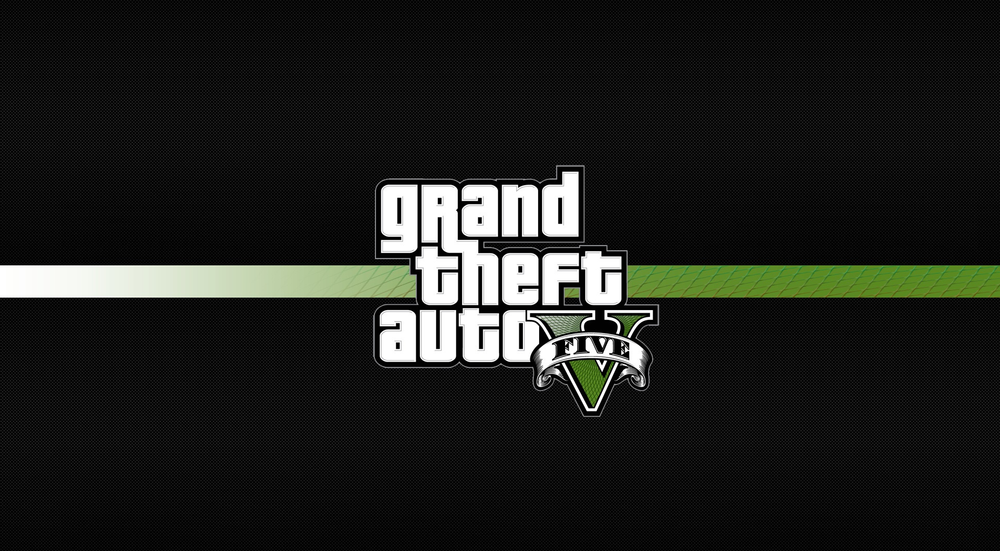
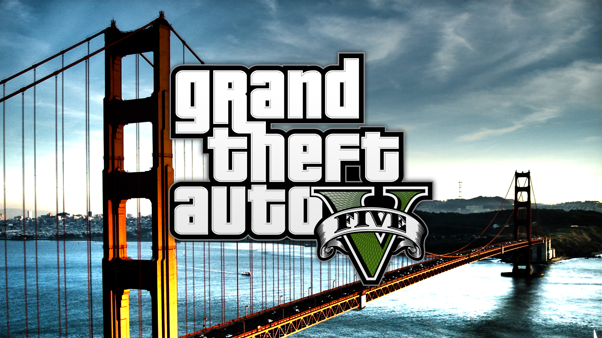
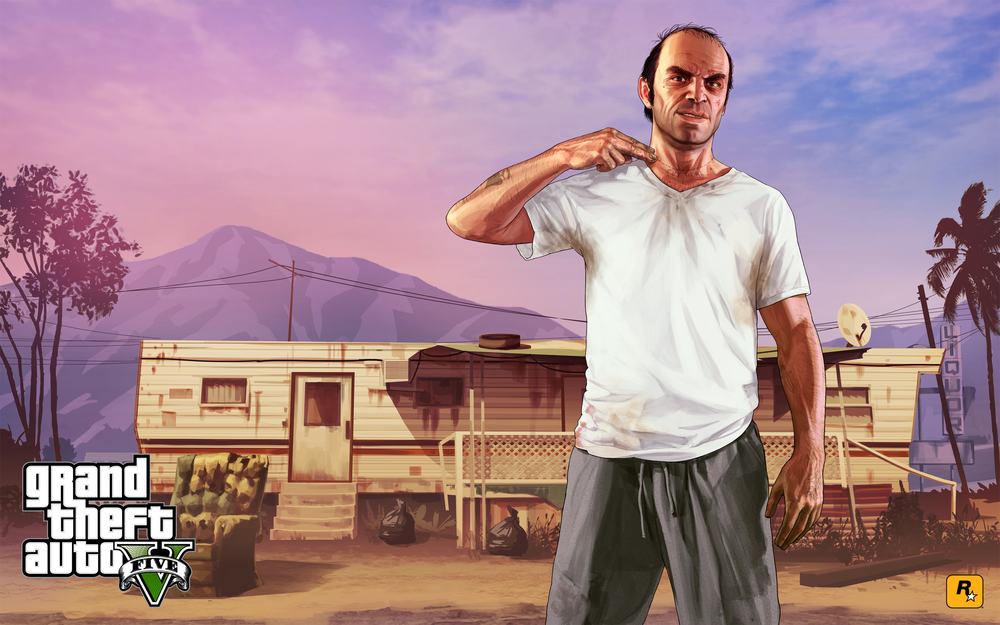

GTA - полтора десятка сверх популярных видеоигр, которые выходят далеко за рамки индустрии. Выход каждой новой части серии для миллионов людей становится настоящим праздником. В этот день никто не идёт на работу, никто не идёт на учёбу. Об этом событии всегда знают даже те, кто вообще никакого отношения к играм не имеет. И в этом году после самой продолжительной паузы в истории серии (а это больше 5-ти лет!) наступило грандиозное событие, релиз Grand Theft Auto 5.В серии gta не принято давать новую цифру каждой последующей игре серии. Для этого должны быть весомые причины. Между gta3 и gta4 пропасть размером в поколение, новый движок, новые платформы, новый подход ко всему. Было очень сложно после анонса Gta5 понять почему же она называется именно так, и получилось сделать это только после релиза. А отличительная особенность всего одна, но она меняет множество аспектов игры одним махом.

Естественно в игре просто неимоверное количество разнообразных дополнительный миссий и разных вещей на которые может уйти не один час. Одно только внутриигровое телевидение чего стоит (я с таким интересом обычный телевизор с детства не смотрел). Так же в игре есть кинотеатры с пародийными фильмами на игровом движке. Множество спортивных занятий - гонки, триатлон, бейсджампинг, дайвинг, гольф, теннис и чего там только нет. Gta5 так же самая богатая игра на пасхалки (внутриигровые секреты). В игре можно найти НЛО, морских чудовищ, зомби, и даже присоединится к религиозному культу. (на эту цепочку миссий, кстати, уйдёт целый день реального времени). GTA 5 абсолютно необъятная игра, с миллионом деталей и возможностей, все аспекты которой выполнены в безупречном качестве. И даже графика на казалось бы давно устаревших консолях местами просто поражает, и это для такой огромной игры. Сразу видно куда ушел бюджет в 260 млн долларов.
GTA по прежнему остаётся одной из самых значимых игр в мире.И тем самым она изящно ставит точку на этом поколении консолей, ничего лучше уже не будет. Это пик. 10 из 10